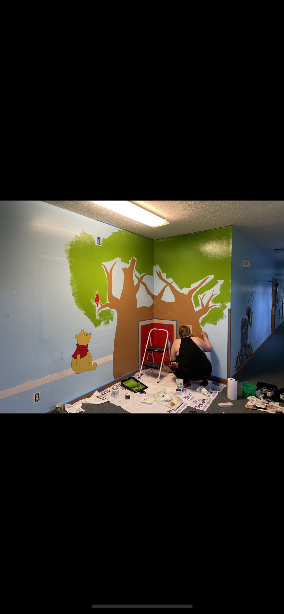

About the Mural
This page talks about the very first mural I ever created for a school that I worked for at the time. This was a completely blank canvas to start with and the first steps towards my artistic journey.

Inspiration
When I was first tasked with the project of painting a corner connected wall, I immediately thought of the classic children's character, Winnie the Pooh. His adventures in the Hundred Acre Wood have always inspired me, and I wanted to bring that magic to life in my mural.
Planning
Given the corner I decided to go with the classic storybook tree theme. I started my sketches from the corner with the base of Winnie's tree and stretched outwards towards the edges of the walls.
Experience
The entire mural took under two days to complete, from primer and sketching to fine-lining and protective coating. I had a partner who helped to complete the final touches in the last 2 hours. It was a rewarding experience to see the mural come to life and to share it with others. Especially the kids that learn there everyday!
Mural Creating Process
Step 1: Sketching and painting the main characters 
Step 2: Sketching the tree and laying out base colors

Step 3:Finishing base paint of the tree and starting log painting

Step 4: Adding finishing details